An AI-powered Microsoft Word add-in that brings drafting, review, rewriting, summarization, and templating directly into a lawyer's document, built on Office.js, Node/Express, and the Claude API. Its centerpiece is an independent suggested-changes engine: every AI edit is proposed, reviewed, and explicitly accepted or rejected before it ever touches the document.
Every mark a lawyer makes on paper starts as a strike-through and a note in the margin. Redpen rebuilds that instinct as a controlled AI review layer.
Legal professionals spend much of their time moving between documents, precedents, internal standards, templates, and drafting tools. A general-purpose AI chat interface can generate legal text, but it introduces friction when the real work is happening inside Word: copy the clause out, explain its context, copy the answer back, find the right paragraph again, manually manage the revision.
Redpen is a Word task-pane add-in designed around how lawyers actually work: select a clause, ask the AI to analyze or modify it, inspect the result, navigate back to the relevant language, and decide what should ultimately change. It evolved into a multi-feature document workspace with structured AI outputs, document-aware actions, reusable legal templates, playbook-assisted review, and an independent lifecycle for controlling every AI-generated edit.
The add-in runs as a Word task pane. The frontend talks to the live document through Office.js and the Word JavaScript API: reading the current selection, inspecting the whole document, searching for specific clauses, inserting paragraphs, replacing ranges, and moving the Word selection to relevant content. AI work is separated into backend endpoints, one per feature, each with its own prompt and response schema, so the frontend renders feature-specific interfaces instead of dumping every AI response into a chat bubble.
Every user action is scoped to one of seven endpoints, so a bug in one workflow can't leak into another:
Each feature is scoped narrowly on purpose. Summarize never rewrites. Rewrite never explains. Simplify is structurally prevented from producing clause-shaped output. Every one is selection-aware: if text is selected in Word, only that content is sent; if nothing is selected, the add-in falls back to the full document automatically.
Returns a structured result rather than one block of prose: a plain-English Summary, extracted Key Points, and any Potential Risks identified in the text, each rendered as its own section so it can be scanned rather than read. On insertion, the add-in first tries to relocate the original summarized selection as an anchor, and falls back to the current selection if that text can no longer be found.
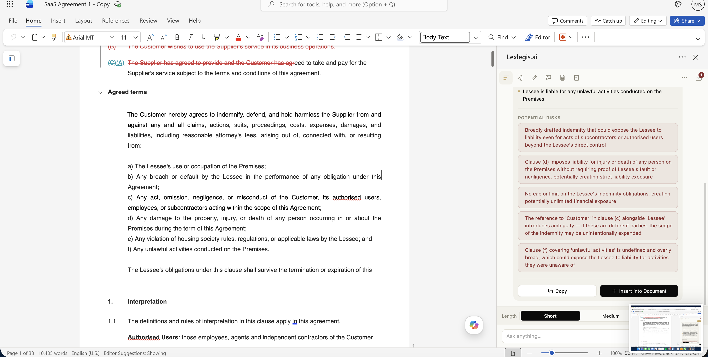
The add-in running inside real Word, on an actual SaaS contract. Summary, key points, and risks each get their own section instead of one wall of text.
Presets like More Concise, More Formal, Plain English, Better Flow, Buyer-Friendly, and Supplier-Friendly remain fully editable before sending, so a preset acts as a starting point rather than a fixed command. The result can be copied, used to replace the selection, or inserted below the original for side-by-side comparison. The add-in retains a link between the generated revision and the clause that produced it, even after the user's cursor moves elsewhere.
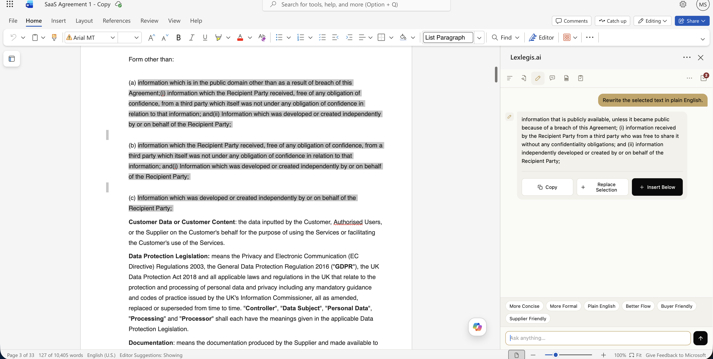
A confidentiality clause rewritten in plain English. The original stays untouched until someone chooses to replace it.
"Simple" means something different depending on who's reading. Users choose a target audience, client, executive, sales, or a custom audience typed in directly, plus a tone (Professional, Conversational, Very Simple). Changing either control changes the actual instruction sent to the model, not just a UI label. Simplify is structurally prevented from reading like a redraft: it explains, it doesn't produce new legal language.
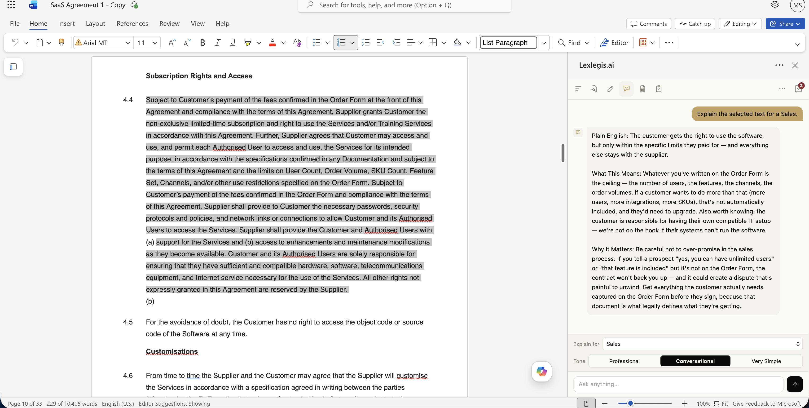
The same clause explained for a salesperson instead of a lawyer: what it means, what it covers, and why it matters when talking to a customer.
Analyzes text against configurable review types, general legal risk, missing clauses, ambiguities, inconsistencies, business risk, and optionally a named firm playbook. Returns structured findings with severity, explanation, and a recommendation. Review never edits anything directly; suggesting a revision is a separate, explicit step per finding, covered in section 05.
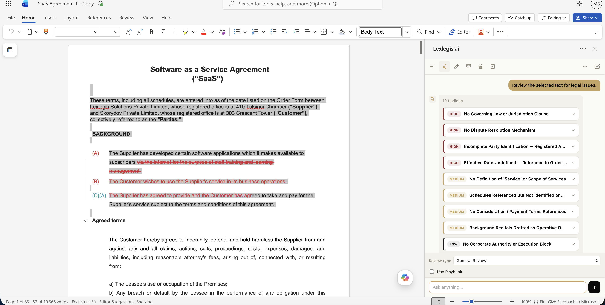
A general review of a real SaaS agreement turned up 10 findings, sorted High to Low so the biggest problems surface first.
Two flows: turning a live document into a reusable template with {{PLACEHOLDER}} tokens, and filling a saved template back in. Opening Fill Template first scans the current document for existing tokens; if the document already contains placeholders, it becomes the source of truth immediately, no need to re-select the same template from a list. Covered in full in section 06.
Instead of one paragraph saying whether a contract "looks fine," Review returns structured findings, each with a severity, title, explanation, recommendation, source, and the exact clause text that triggered it. Findings render as expandable cards rather than chat text, so a lawyer can triage by severity before reading any explanation in full.
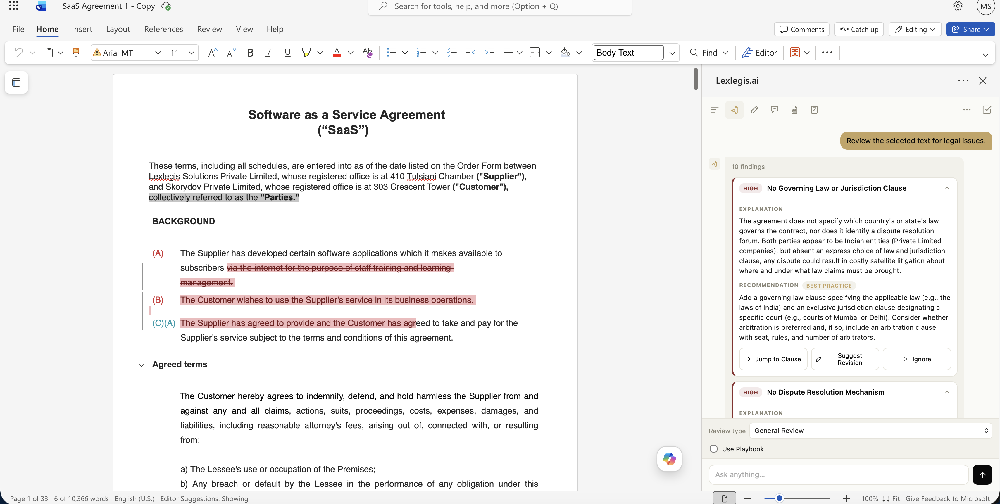
One finding opened up, on the same real contract. Every finding explains itself in plain terms before it ever gets close to touching the document.
The current clause excludes indirect and consequential damages but does not cap direct damages, which conflicts with the firm's standard liability position. Playbook rule LP-04 requires a direct-damages cap tied to fees paid in the preceding 12 months.
"Reasonable notice" is used without a defined number of days, which invites dispute over what constitutes compliance. Most comparable agreements specify 30 or 60 days explicitly.
Governing law is specified, but no exclusive venue or forum is named for disputes, which can complicate enforcement.
When playbook review is enabled, a finding can carry the specific internal rule that triggered it, shown alongside the requirement, how the current document compares, and the result of that comparison. This lets the AI explain why something was flagged rather than simply asserting that a clause is a problem, and it means a suggested revision can reuse the same playbook rule as context for the replacement language.
Each finding retains the underlying clause text that caused it. Selecting Jump to Clause searches the live document for that text and moves the Word selection there directly. Since generated or normalized text doesn't always exactly match Word's underlying representation, the search runs multiple strategies, exact match, normalized whitespace, and shorter candidate snippets, and if none succeed, the interface disables navigation rather than silently jumping somewhere wrong.
The interface distinguishes findings sourced from general legal drafting guidance versus a firm's own internal standard, so a reviewer knows immediately whether a flag reflects broad convention or a rule the firm has specifically decided matters.
This was the hardest, and most rewritten, problem in the project. The original model was simple: an AI response would replace text in the document immediately. That worked in the happy path, but any interruption, a slow response, the user editing nearby text, closing the task pane mid-generation, could leave the document in a state nobody asked for. For a legal tool, a corrupted document is worse than a missing feature.
The redesign introduces a real approval boundary between two operations that used to be one: "the AI thinks this should change" is no longer the same event as "the document changes."
A finding is surfaced with severity, explanation, and recommendation. Nothing in the document has changed yet.
An explicit user action sends the clause, issue, explanation, and any playbook context to a dedicated revision endpoint.
The response becomes a SuggestedChange object: original text, proposed text, reasoning, source, and document location, held in a queue rather than applied.
The user reviews the proposed edit side by side with the original and makes the call. Only Accept touches the document.
On accept, the original clause is relocated in the live document and replaced. If it can no longer be found, the change is not marked accepted.
Nothing is deleted from the queue on reject. Every resolved change, accepted or rejected, moves to a timestamped history rather than disappearing.
Try it: an example finding turned into a suggested change
This is a static illustration of the actual accept/reject/history flow described above, not a live model call.
Here's the same flow happening for real, from a Review finding that flagged the contract's effective date as undefined:
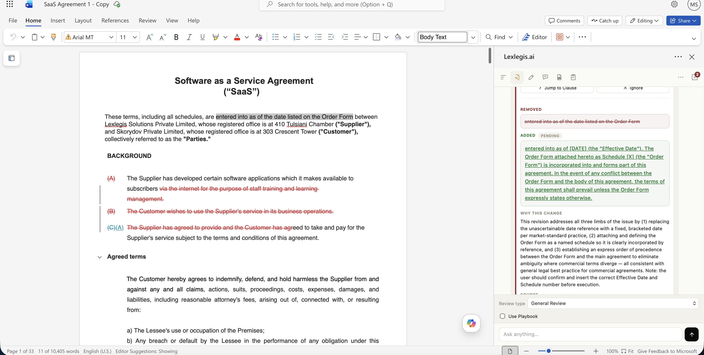
The proposal, sitting in the queue. Nothing in the document has changed yet.
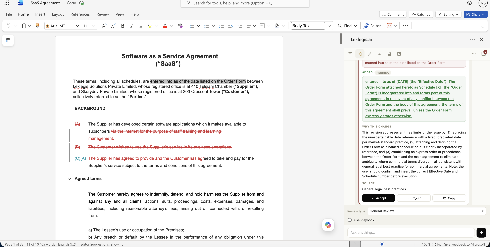
Only after Accept is clicked does the document actually update.
One thing worth pointing out: the tool doesn't always draft a replacement. On the same contract, a finding about a missing governing law clause came back with the "Added" box left blank on purpose, along with a written explanation for why.
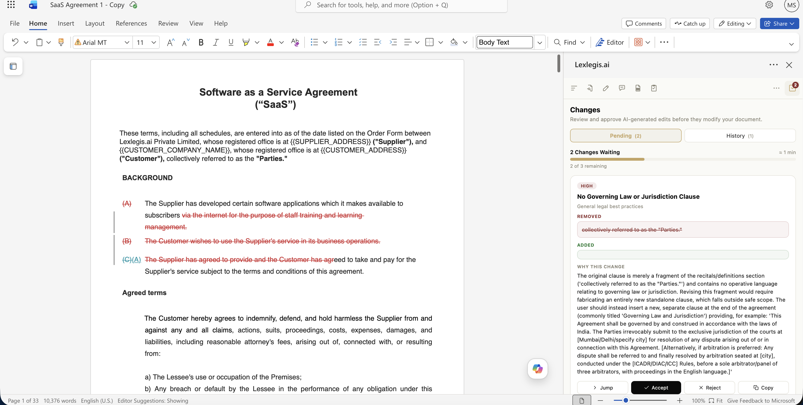
The original text was a background sentence with nothing to fix, not a real clause to rewrite. Rather than invent a governing law clause out of nowhere, the tool said so and explained what to do instead. That refusal to guess was more useful than a confident wrong answer would have been.
The right abstraction sometimes only becomes visible on the second rewrite. Moving the redline concept out of the document and into a UI-only state machine became the foundation for every feature built after it.
Turning a document into a template means finding every span of text that's specific to this document and should become a fill-in-the-blank field. Detection runs in two passes: a regex pass that catches deterministic patterns instantly and for free, emails, phone numbers, dollar amounts, dates, city and state lines, and an LLM pass that catches what regex structurally can't, person names, company names, job titles, reference numbers. The two are merged, deduplicated, and auto-numbered so the placeholder list reads top to bottom the way the document does.
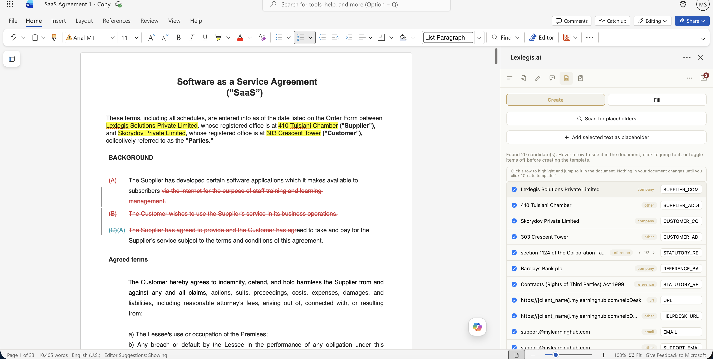
Scanning a real contract turns up 20 candidates, each labelled and ready to include or leave out.
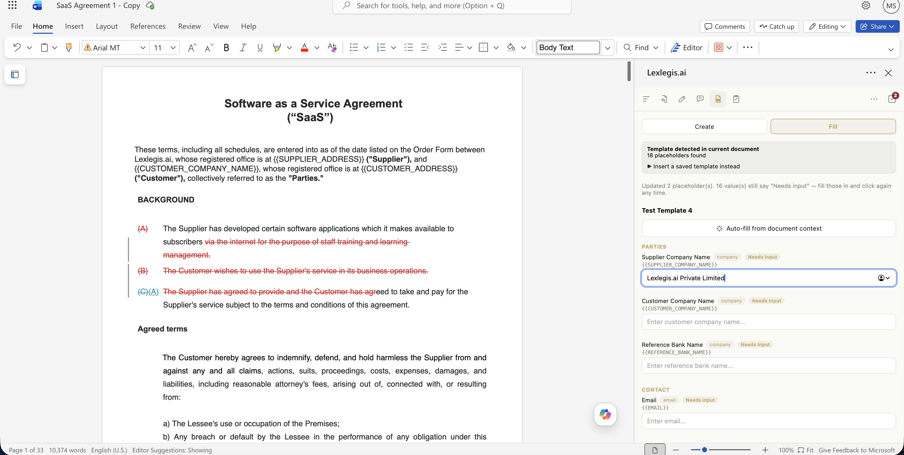
Filling a template back in: the add-in noticed placeholders already in the document and offered to fill them from context.
Opening Fill Template scans the current document for {{PLACEHOLDER}} tokens first. If they're already there, Fill Mode opens immediately using the open document as the source of truth. Only if none are found does the user pick from a saved template list, and filling a blank document versus one with existing content requires explicit confirmation before anything is overwritten.
Template fields can be populated from surrounding document context via /api/autofill-template. The merge order is strict: existing manual value, then AI suggestion, then empty. The interface visibly distinguishes AI-suggested values from fields that still need manual input, and every suggestion stays editable.
The add-in maintains a mapping between each placeholder and its current value in Word. Clicking Fill again only searches for and replaces fields that actually changed since the last fill, so a user can fix one field and reapply without rebuilding or overwriting the whole document. This state persists in Word document settings, tied to the file itself.
Raw tokens like {{SUPPLIER_COMPANY_NAME}} are converted into readable form fields such as "Supplier Company Name," grouped into sections like Parties, Contact, Commercial, and Dates, while the original token stays visible for clarity about what's actually being substituted.
As the prototype grew, multiple features needed to manipulate Word ranges. Rather than letting each one implement document editing independently, every document mutation now passes through the same applySuggestedChange() function: locate the change, relocate the original clause in the current document, verify the source text still exists, apply the replacement, select the resulting text, and update the stored document location so the change can still be found later.
If the original clause has been manually edited or deleted since the suggestion was generated, the system refuses to mark it accepted and reports that the source text couldn't be found, instead of silently applying an edit to the wrong place.
Centralizing every document mutation behind one function means the underlying editing implementation can later be swapped for a true redline or tracked-changes engine without rewriting the Review, Templates, or Changes workflows built on top of it.
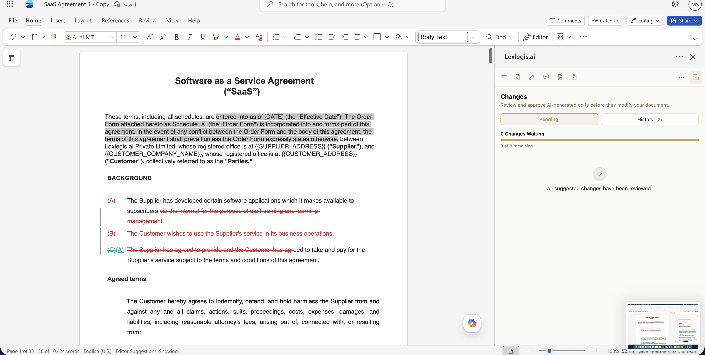
The end state: every suggested change has been accepted or rejected, the queue is empty, and the document itself now contains the accepted effective date clause.
The hardest problems in this project weren't calling an LLM. They were deciding how generated output maps back onto a document that keeps changing underneath it, someone can be typing in a completely different paragraph while the AI is still working.
Selections, ranges, document searches, paragraph insertion, replacement, and cursor movement all had to account for a document that can change between generation and application, not a static string.
AI suggestions can stay visible long after the user's cursor has moved elsewhere. Results retain the source text that generated them and attempt to relocate it when an action is later performed, rather than trusting the current selection.
Raw model responses are difficult to build reliable interfaces around. Summarize and Review both structure output into predictable fields so the frontend can render summaries, severities, recommendations, and playbook references as real product components, not chat text.
The single most important architectural decision in the project: "the AI thinks this should change" is not the same event as "change the document." The suggested-changes queue is the approval boundary between them.
AI-generated values and revisions remain editable or rejectable everywhere in the product. Autofill preserves manual entries, findings require an explicit revision request, and revisions require explicit approval before touching the document.
The task-pane UI, the Word Object Model integration, the Express proxy, every prompt, and the suggested-changes state machine were all written directly, with the Claude API handling language understanding and generation.
This is an independently developed prototype, not a production deployment. Summarize, Rewrite, Simplify, Review, Templates, and the suggested-changes workflow all have functional Word integration. A few actions visible in the interface, proofreading, translation, anonymization, and standalone clause drafting, currently use prototype or mock behavior rather than complete backend workflows, and a full persistent redline visualization inside the document is an intended next step rather than something already built.
This is especially true in high-stakes tools. A parsing failure that quietly returns an empty result is more dangerous than one that visibly errors, because the user has no signal anything went wrong. It shaped how every endpoint handles malformed model output.
Review never rewrites. Rewrite never explains. Simplify never redrafts. Enforcing that boundary in the prompt and the response schema made each tool's output predictable enough to actually rely on, instead of double-checking whether "summarize" secretly changed a meaning somewhere.
The first version of document editing, mutate immediately, seemed reasonable until it broke under real interruption. The fix wasn't a patch. It was moving generation and mutation apart entirely, which became the foundation everything else was built on.